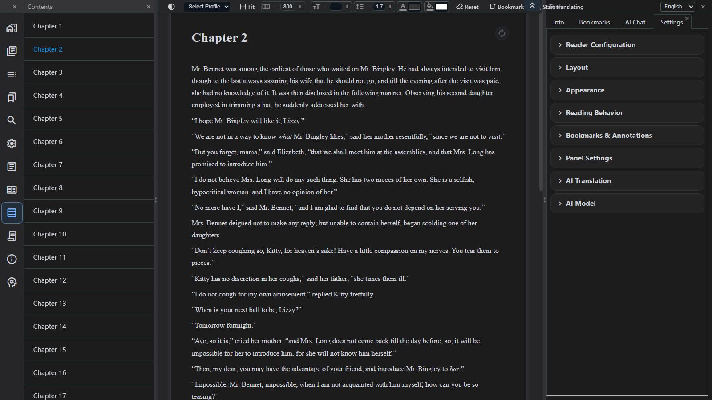

Reader at a Glance
The reader has four parts: the toolbar on the left, the text area, the side panels, and a quick controls bar floating above the text.

Left toolbar
A vertical column of buttons on the far left. Opening a panel or switching reading mode starts here. Clicking the same button again closes its panel.
| Button | What it does |
|---|---|
| Shelf | Back to the Shelf |
| Bookshelf | Open another book |
| TOC | Show or hide the chapter contents |
| Bookmarks | Open the bookmarks panel |
| Search | Search inside this book |
| Settings | Open reading settings |
| Single Page / Double Page / Continuous / Single Frame | Switch reading mode |
| Book Info | See details about this book |
| AI Chat | Ask questions about this book |
Quick controls
A bar floating above the text. It controls how the book looks:
- Theme, font, font size, line spacing, text color, background color, and Reset.
- Width and Fit; in paged modes, top and bottom margins as well.
- Bookmark and Start translating.
- The arrow at the right end collapses or restores the bar.
Text area
Scroll vertically in continuous modes; turn pages in paged modes. At the start or end of a chapter you can keep going into the next one.
Side panels
Contents, bookmarks, search, settings, AI Chat and book info all slide in from the right; only one is open at a time.
After selecting text
Selecting text opens a menu: Copy, Note, Bookmark, Highlighter, Underline, Wavy, Search, Translate and AI, plus five colors. See Notes & Annotations.